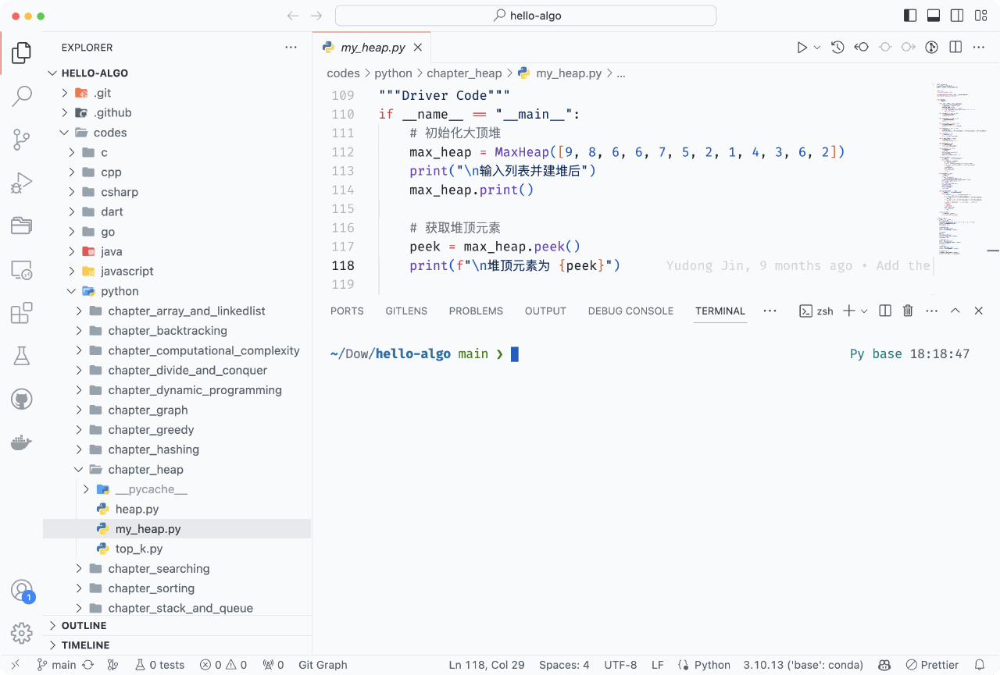
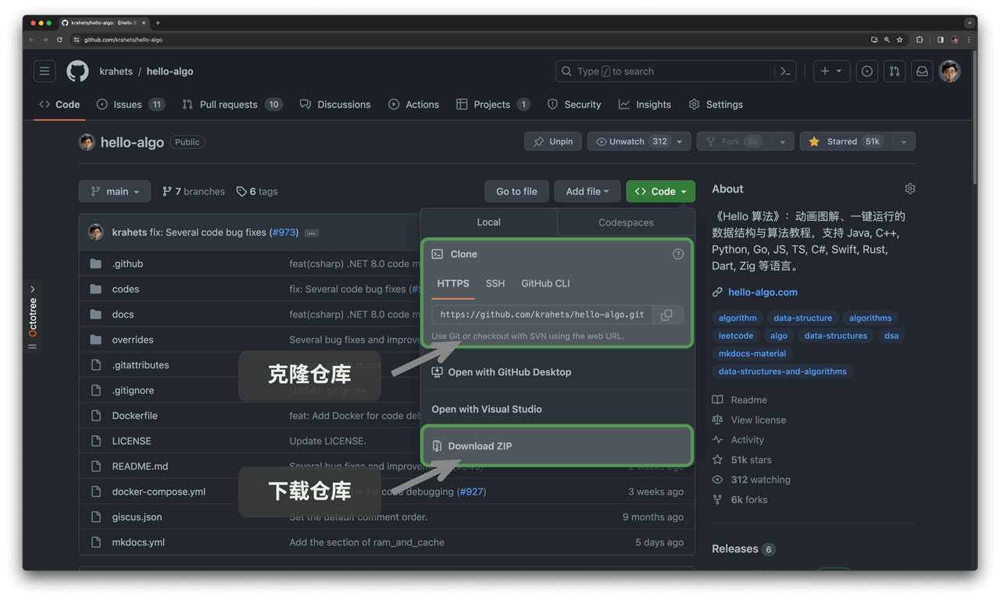
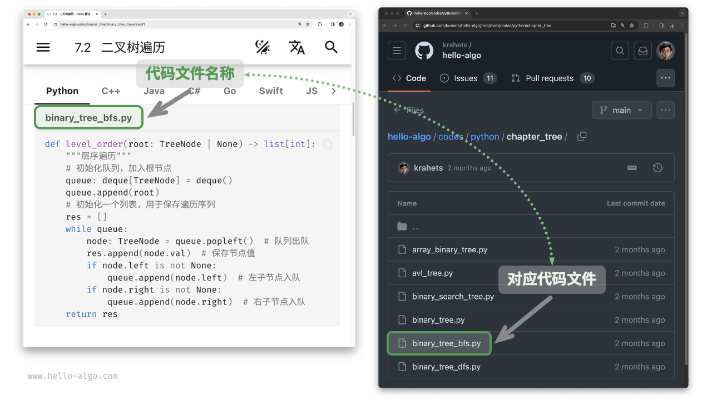
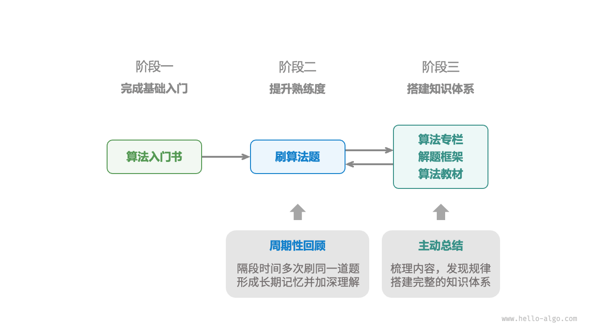

如何使用本书
!!! tip
为了获得最佳的阅读体验，建议你通读本节内容。
行文风格约定
- 标题后标注
*的是选读章节，内容相对困难。如果你的时间有限，可以先跳过。 - 重要专有名词及其英文翻译会用
「 」括号标注，例如「数组 array」。建议记住它们，以便阅读文献。 - 专有名词和有特指含义的词句会使用
“引号”标注，以避免歧义。 - 重要名词、重点内容和总结性语句会 加粗 ，这类文字值得特别关注。
- 当涉及编程语言之间不一致的名词时，本书均以 Python 为准，例如使用
None来表示“空”。 本书部分放弃了编程语言的注释规范，以换取更加紧凑的内容排版。注释主要分为三种类型：标题注释、内容注释、多行注释。
"Python"
```python title="" """标题注释，用于标注函数、类、测试样例等"""
// 内容注释，用于详解代码
""" 多行 注释 """ ```
"C++"
```cpp title="" / 标题注释，用于标注函数、类、测试样例等 /
// 内容注释，用于详解代码
/**
- 多行
- 注释 */ ```
"Java"
```java title="" / 标题注释，用于标注函数、类、测试样例等 /
// 内容注释，用于详解代码
/**
- 多行
- 注释 */ ```
"C#"
```csharp title="" / 标题注释，用于标注函数、类、测试样例等 /
// 内容注释，用于详解代码
/**
- 多行
- 注释 */ ```
"Go"
```go title="" / 标题注释，用于标注函数、类、测试样例等 /
// 内容注释，用于详解代码
/**
- 多行
- 注释 */ ```
"Swift"
```swift title="" / 标题注释，用于标注函数、类、测试样例等 /
// 内容注释，用于详解代码
/**
- 多行
- 注释 */ ```
"JS"
```javascript title="" / 标题注释，用于标注函数、类、测试样例等 /
// 内容注释，用于详解代码
/**
- 多行
- 注释 */ ```
"TS"
```typescript title="" / 标题注释，用于标注函数、类、测试样例等 /
// 内容注释，用于详解代码
/**
- 多行
- 注释 */ ```
"Dart"
```dart title="" / 标题注释，用于标注函数、类、测试样例等 /
// 内容注释，用于详解代码
/**
- 多行
- 注释 */ ```
"Rust"
```rust title="" / 标题注释，用于标注函数、类、测试样例等 /
// 内容注释，用于详解代码
/**
- 多行
- 注释 */ ```
"C"
```c title="" / 标题注释，用于标注函数、类、测试样例等 /
// 内容注释，用于详解代码
/**
- 多行
- 注释 */ ```
"Zig"
```zig title="" // 标题注释，用于标注函数、类、测试样例等
// 内容注释，用于详解代码
// 多行 // 注释 ```
在动画图解中高效学习
相较于文字，视频和图片具有更高的信息密度和结构化程度，更易于理解。在本书中，重点和难点知识将主要通过动画以图解形式展示，而文字则作为解释与补充。
如果你在阅读本书时，发现某段内容提供了如下图所示的动画或图解，请以图为主、以文字为辅，综合两者来理解内容。

在代码实践中加深理解
本书的配套代码托管在 GitHub 仓库。如下图所示，源代码附有测试样例，可一键运行。
如果时间允许，建议你参照代码自行敲一遍。如果学习时间有限，请至少通读并运行所有代码。
与阅读代码相比，编写代码的过程往往能带来更多收获。动手学，才是真的学。

运行代码的前置工作主要分为三步。
第一步：安装本地编程环境。请参照附录所示的教程进行安装，如果已安装，则可跳过此步骤。
第二步：克隆或下载代码仓库。前往 GitHub 仓库。
如果已经安装 Git ，可以通过以下命令克隆本仓库：
git clone https://github.com/krahets/hello-algo.git
当然，你也可以在下图所示的位置，点击“Download ZIP”按钮直接下载代码压缩包，然后在本地解压即可。

第三步：运行源代码。如下图所示，对于顶部标有文件名称的代码块，我们可以在仓库的 codes 文件夹内找到对应的源代码文件。源代码文件可一键运行，将帮助你节省不必要的调试时间，让你能够专注于学习内容。

在提问讨论中共同成长
在阅读本书时，请不要轻易跳过那些没学明白的知识点。欢迎在评论区提出你的问题，我和小伙伴们将竭诚为你解答，一般情况下可在两天内回复。
如下图所示，网页版每个章节的底部都配有评论区。希望你能多关注评论区的内容。一方面，你可以了解大家遇到的问题，从而查漏补缺，激发更深入的思考。另一方面，期待你能慷慨地回答其他小伙伴的问题，分享你的见解，帮助他人进步。

算法学习路线
从总体上看，我们可以将学习数据结构与算法的过程划分为三个阶段。
- 阶段一：算法入门。我们需要熟悉各种数据结构的特点和用法，学习不同算法的原理、流程、用途和效率等方面的内容。
- 阶段二：刷算法题。建议从热门题目开刷，如“剑指 Offer”和“LeetCode Hot 100”，先积累至少 100 道题目，熟悉主流的算法问题。初次刷题时，“知识遗忘”可能是一个挑战，但请放心，这是很正常的。我们可以按照“艾宾浩斯遗忘曲线”来复习题目，通常在进行 3～5 轮的重复后，就能将其牢记在心。
- 阶段三：搭建知识体系。在学习方面，我们可以阅读算法专栏文章、解题框架和算法教材，以不断丰富知识体系。在刷题方面，可以尝试采用进阶刷题策略，如按专题分类、一题多解、一解多题等，相关的刷题心得可以在各个社区找到。
如下图所示，本书内容主要涵盖“阶段一”，旨在帮助你更高效地展开阶段二和阶段三的学习。
